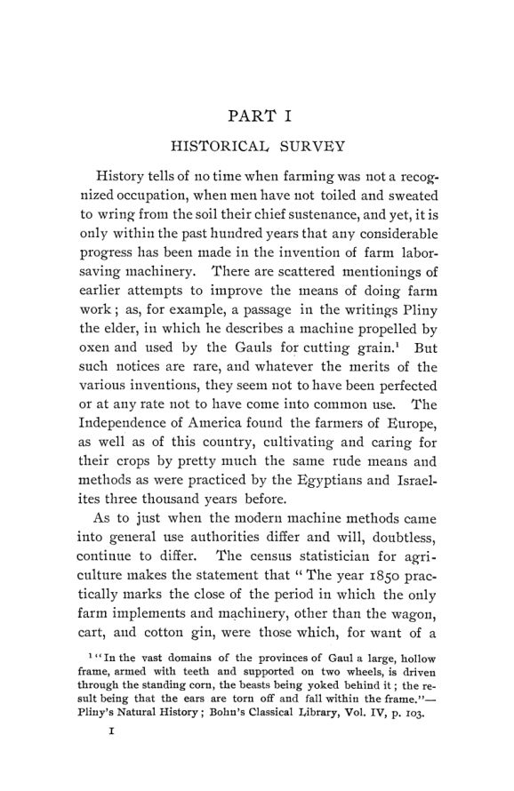

Quaintance, 1904: a máquina que tirou o trabalhador do campo
Leitura: 9 min
Em 1904, H. W. Quaintance mediu com dados do Census e do Department of Labor quanto a máquina agrícola multiplicou a produção por trabalhador e quantas pessoas ela deslocou do campo.


Cortar e curar uma tonelada de feno exigia 11 horas de trabalho humano. Com segadeiras, ancinhos puxados a cavalo, reviradores e empilhadeiras, a mesma tarefa passou a levar 1 hora e 39 minutos. O dado vem do anuário de 1899 do Department of Agriculture, e H. W. Quaintance o usa para ilustrar uma afirmação mais ampla: quase nenhuma etapa do trabalho agrícola deixou de ser alterada por alguma máquina nova.
The Influence of Farm Machinery on Production and Labor saiu em novembro de 1904 como o nº 4 do vol. 5 da terceira série das Publications of the American Economic Association. No prefácio, assinado na University of Missouri, o autor diz que o tema foi sugerido por David Kinley, da University of Illinois, e agradece a Carroll D. Wright, ex-comissário do Trabalho, a I. P. Roberts, de Cornell, ao seminário de Richard Ely em Wisconsin e a M. B. Hammond. Declara ter evitado provar uma teoria, preferindo, nas suas palavras:
“deixar que os dados contem sua própria história” (“to let the data tell their own story”)
Quando a máquina chegou ao campo?
Tarde, segundo as fontes reunidas na parte histórica. O estatístico agrícola do Census considera que 1850 marca praticamente o fim da era dos implementos manuais. Até lá, além da carroça e do descaroçador de algodão, só o arado de ferro fundido havia se incorporado de vez à lavoura. Seu precursor, patenteado por Charles Newbold em 1797, enfrentou agricultores convencidos de que o ferro fundido envenenava a terra. As ceifadeiras de Obed Hussey e Cyrus McCormick foram patenteadas em 1833 e 1834, mas a complexidade das máquinas atrasou sua difusão.
A produção cresceu mais que a população?
Bem mais. Entre as safras de 1839 e 1899, a cevada se multiplicou por 28,7, e milho, algodão, aveia, trigo e feno, por 6 a 8. A população de 1900 era 4,4 vezes a de 1840. Em índice com base 100 em 1840, a produção dos oito principais cereais chegou a 718,4 em 1900, contra 442,7 da população. A única exceção é 1870, que o autor atribui à safra fraca de milho e à desorganização dos estados do Sul.
Quanto rende o trabalho com a máquina?
Pelos números do Census, a área cultivada por trabalhador do sexo masculino passou de 23,3 acres em 1880 para 31,0 em 1900, e o número de cavalos por trabalhador, de 1,7 para 2,3. O estatístico do Census concluiu que a eficiência do trabalho humano subira cerca de 33%. Quaintance faz uma ressalva: a área por cavalo ficou igual, logo o ganho por trabalhador reflete menos uma expansão das propriedades do que um crescimento abaixo do normal do número de trabalhadores.
A medida mais precisa vem do 13º relatório anual do Department of Labor, que comparou, operação por operação, o tempo e o custo de produzir a mesma quantidade de cada cultura por métodos manuais e mecânicos. Quaintance atribui toda a diferença à máquina. Reconhece que adubos, irrigação, rotação e sementes melhores também contam, mas diz que separar essas parcelas seria, nas suas palavras:
“como tentar determinar qual lâmina de uma tesoura faz o corte” (“like attempting to determine which blade of a pair of shears does the cutting”)
Por esse critério, o aumento da eficácia do trabalho vai de 150% no centeio a 2.244% na cevada. Citando Hadley, o autor diz que a máquina é menos um poupador de trabalho do que um fabricante de produto. Na média das culturas, o produto por unidade de trabalho seria quase cinco vezes o de antes.
Quanto caiu o custo de produzir?
Na cevada, o custo de um acre caiu de US$ 3,88 para US$ 1,06; no trigo, de US$ 4,00 para US$ 1,12. Quaintance aplica os custos unitários do relatório às safras de 1899. O resultado vai na caixa. Ele observa que os dados de custo são menos confiáveis que os de tempo, porque salários variam entre lugares e épocas, e explica as exceções: no tabaco e na ervilha o custo subiu porque os salários subiram sem mudança relevante de método.
Para onde foi o trabalho poupado?
Nas nove principais culturas, a máquina poupou 450.368.992 dias de trabalho, ou 79% do que seria necessário pelos métodos manuais. Quaintance distingue deslocamento absoluto, quando o número de trabalhadores de um setor cai, e relativo, quando cresce menos que o emprego em geral. Excluído o algodão, o deslocamento absoluto nas outras oito culturas é de 42,5%.
A Nova Inglaterra é o exemplo de deslocamento absoluto em toda a agricultura. A população ocupada no setor caiu de 304.679 pessoas em 1880 para 287.829 em 1900, enquanto o valor da produção agrícola subiu mais de 50%. No mesmo período, o valor de implementos e máquinas por acre de terra melhorada passou de US$ 1,68 para US$ 4,49.
No país como um todo, a agricultura reunia 47,6% das pessoas em ocupações remuneradas em 1870 e 35,7% em 1900. O autor calcula quantos estariam no campo se a proporção tivesse se mantido e chega a quase 3,5 milhões. Para mostrar que a máquina é a causa, estima que, com a eficiência de 1869, a produção de cereais de 1899 exigiria cerca de 7 milhões de trabalhadores a mais, mais que o dobro dos que saíram. Ele discorda do professor Davenport, da University of Illinois, que dissera à Industrial Commission não acreditar que a máquina tivesse reduzido o emprego no campo.
Quem ganhou com a mudança?
Os salários subiram onde a máquina entrou. Nas cinco culturas mais mecanizadas, a média diária passou de 66 centavos para US$ 1,76, alta de 166%. Nas cinco em que o método quase não mudou, caiu de US$ 1,11 para US$ 1,04. O salário mensal com alimentação, fora dos estados do Sul, subiu 40,8% de 1869 a 1899, de US$ 12,29 para US$ 17,31.
A distribuição, porém, mudou. Nos sete principais estados produtores de cereais, os assalariados agrícolas cresceram 73,6% de 1880 a 1900, e os agricultores, fazendeiros e capatazes, 27,4%. A máquina exige áreas maiores e mais capital; o valor médio de uma propriedade nesses estados passou de US$ 3.515 para US$ 6.531, o que dificulta ao assalariado tornar-se proprietário. Quaintance estima que a renda dos proprietários cresceu bem mais que a dos assalariados e conclui que o trabalhador sem preparo para operar máquinas tende a descer na escala social. Sua proposta é que o Estado exija que toda criança aprenda ao menos os rudimentos da arte industrial.
Na minha leitura
Na minha leitura, o método é o ponto forte e o limite do livro. A pergunta que Quaintance faz, quanto o mesmo trabalho produziria com a técnica antiga, é uma forma precoce de contrafactual de produtividade. Mas ao atribuir à máquina toda a diferença entre 1830 e 1895, ele produz um teto, não uma estimativa: o ganho inclui sementes, adubos, terras novas do Oeste e organização. Ele declara a escolha, o que permite ao leitor descontá-la.
O resultado mais duradouro está na segunda metade. A mecanização elevou a produção por trabalhador, elevou o salário de quem operava as máquinas e, ao mesmo tempo, deslocou milhões do campo, aumentou o capital necessário para ser proprietário e deixou para trás quem não tinha preparo. É a mesma pergunta que se faz hoje diante de cada onda de automação: o ganho médio é claro; a distribuição depende de mobilidade, crédito e formação.
Glossário
- Método manual (hand method)
- no relatório do Department of Labor, a técnica primitiva anterior ao uso geral de máquinas automáticas ou a motor, não o trabalho sem ferramenta alguma.
- Método mecânico (machine method)
- a técnica mais aprovada em uso nos anos recentes da pesquisa.
- Dia de trabalho (days-work)
- unidade de medida do trabalho humano usada para comparar os dois métodos.
- Deslocamento absoluto
- queda no número de trabalhadores de um setor.
- Deslocamento relativo
- crescimento do emprego de um setor abaixo do crescimento do emprego total.
- Classe dependente e independente
- assalariados agrícolas, de um lado; agricultores, fazendeiros e capatazes, de outro.
- Bushel
- medida americana de volume para grãos, de cerca de 35 litros.
- Acre
- medida de área de cerca de 0,4 hectare.
Fontes
- The Influence of Farm Machinery on Production and Labor (pp. 1–106). JSTOR · Internet Archive (PDF)
- Sumário da edição no JSTOR: Publications of the American Economic Association, 3ª série, vol. 5, nº 4.
Documento em domínio público (EUA, publicado antes de 1931), via JSTOR Early Journal Content e Internet Archive. Resumo e comentário do autor deste site, sem afiliação com a American Economic Association. Encontrou um erro? Escreva: a correção é publicada no próprio texto, com data.
← Nº 71 · Walker, 1904: por dentro do cartel do carvão do Ruhr Nº 73 · Chicago, 1904: livre comércio, teoria dos preços e oficina aberta →